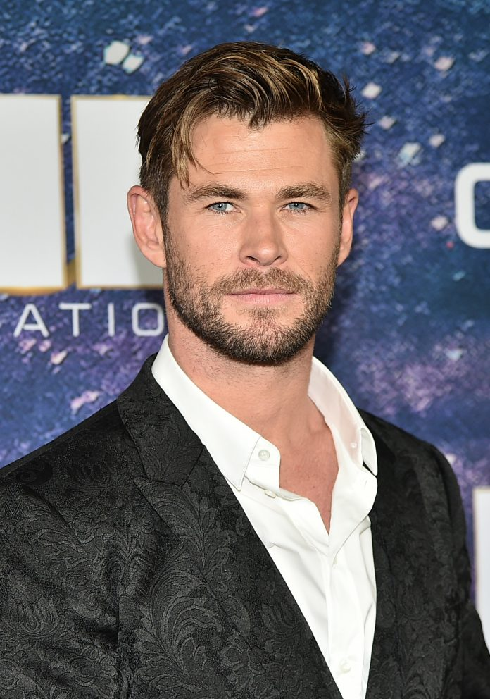

Christopher Hemsworth (Melbourne, 11 agosto 1983) è un attore australiano. Ha raggiunto la notorietà internazionale grazie al ruolo del dio del tuono Thor nei film del Marvel Cinematic Universe. Nella sua carriera ha ottenuto molti ruoli da protagonista in film come Rush, Biancaneve e il cacciatore e Heart of the Sea - Le origini di Moby Dick. Chris Hemsworth è nato e cresciuto tra Melbourne e Bulman (piccolo centro abitato a 400 km a sud-est di Darwin)[1], figlio di Craig, un amministratore dei servizi sociali, e Leonie, un'insegnante di inglese, e secondo di tre figli. Ha due fratelli, Luke e Liam, entrambi attori e molto noti sul grande schermo. Con la famiglia si trasferisce durante l'adolescenza a Phillip Island (Victoria). Dopo gli studi alla Heathmont Secondary College di Melbourne[2], comincia a lavorare in produzioni televisive e ottiene in poco tempo alcuni ruoli minori.Nel 2002, Hemsworth recita in due episodi della serie televisiva fantasy Ginevra Jones, interpretando il ruolo di Re Artù; nello stesso periodo è chiamato per comparire nelle soap opere Neighbours e Marshall Law. Chris continua a interpretare ruoli di poco rilievo fino a che, nel 2004, fa un provino per entrare nel cast della soap opera Home and Away, dove ha interpretato il personal trainer Kim Hyde fino al 3 luglio 2007, per un totale di 171 episodi. Lasciata la soap opera partecipa all'edizione australiana di Dancing with the Stars, equivalente di Ballando con le stelle, dove si è esibito con la ballerina professionista Abbey Ross: la stagione ha esordito il 26 settembre 2006, e dopo sei settimane, Hemsworth è stato eliminato il 7 novembre dello stesso anno. Successivamente recita in film come A Perfect Getaway - Una perfetta via di fuga di David Twohy e Cash Game - Paga o muori con Sean Bean. Ha partecipato ai provini di X-Men le origini - Wolverine per il ruolo di Gambit (poi andato a Taylor Kitsch) e G.I. Joe - La nascita dei Cobra per il casting di Duke (vinto da Channing Tatum).
